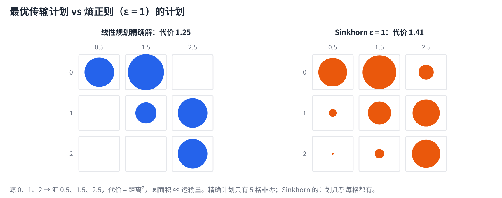
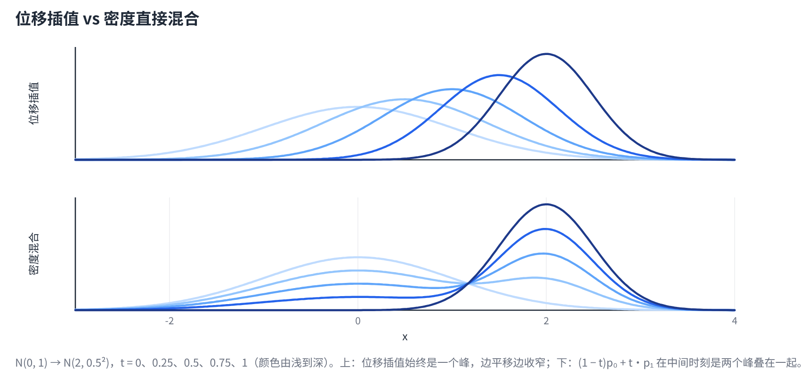
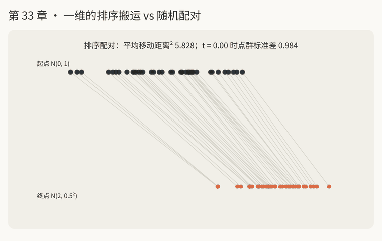

第 33 章 · 最优传输：Monge 与 Kantorovich、Wasserstein 距离、熵正则与 Sinkhorn、动态最优传输
本地运行
git clone https://github.com/wikieden/math-and-eval-stats
cd math-and-eval-stats/code/notebooks
pip install jupyterlab torch numpy
jupyter lab ch33_optimal_transport.ipynb也可以下载后直接用 VS Code 打开 .ipynb 运行。需要 GPU 的章节在 Colab 里选「代码执行程序 → 更改运行时类型 → GPU」。
本章回答：把一堆土搬成另一种形状，最省力的搬法是什么？Wasserstein 距离和 KL 散度有什么不同，为什么生成模型喜欢前者？Sinkhorn 为什么快？"位移插值"和 flow matching 的直线路径是什么关系？
讲解日期：2026-11-25 · 上一章：第 32 章 随机微积分 · 下一章：第 34 章 信息几何
对应原文：Peyré & Cuturi《Computational Optimal Transport》math-and-eval-stats/materials/text/papers/computational-optimal-transport-1803.00567.txt（§2.3 Kantorovich 松弛 L606；Remark 2.30 一维情形 L1456；Remark 2.31 高斯之间的距离 L1510；§4.2 Sinkhorn 算法及收敛 L2910；第 7 章动态形式，目录 L64–L70）
本章缩写：OT = Optimal Transport（最优传输）；W_p = p-Wasserstein 距离（Wasserstein 是苏联数学家）；C_ij = 从 i 运到 j 的单位代价；P = 传输计划（耦合）；a、b = 源和汇的质量；ε = 熵正则系数；K = e^{−C/ε}（Gibbs 核）；KL = Kullback–Leibler 散度。全部缩写见 附录 · 缩写与术语表
讲解
第一步：Monge 问题：一维时排序就是最优（2026-11-25）
类比：把一排高矮不齐的沙堆搬成另一排。 最省力的办法是"最左的沙搬到最左的坑"，不交叉。
Monge 问题：找一个映射 T 把分布 μ 推成 ν，最小化 \(\int c(x, T(x))d\mu\)。一维、代价是凸函数（如 |x − y|²）时，最优映射是单调的：把两边各自排序、一一对应（Peyré & Cuturi Remark 2.30，L1456）。
例子：N(0, 1) → N(2, 0.5²)。高斯之间有闭式（Remark 2.31，L1510）：\(W_2 = \sqrt{(m_0 - m_1)^2 + (s_0 - s_1)^2} = \sqrt{4 + 0.25} = 2.0616\)；10 万个样本排序配对估计 2.0628。
一句话：一维最优传输 = 排序配对，最优映射单调、不交叉；高斯之间的 W₂ 是均值差和标准差差的勾股和。
第二步：Kantorovich：允许拆开运，变成线性规划（2026-11-25）
Monge 要求"每粒沙去一个地方"，有时无解（一个点质量没法拆成两个）。Kantorovich（§2.3，L606）改成找传输计划 P：P_ij = 从 i 运到 j 的量。
这是一个线性规划。
例子（源 0、1、2，质量 0.5、0.3、0.2 → 汇 0.5、1.5、2.5，质量 0.2、0.4、0.4，代价 = 距离²）：最优总代价 1.25，计划
| 源 \ 汇 | 0.5 | 1.5 | 2.5 |
|---|---|---|---|
| 0 | 0.2 | 0.3 | 0 |
| 1 | 0 | 0.1 | 0.2 |
| 2 | 0 | 0 | 0.2 |
源 0 的 0.5 被拆成 0.2 + 0.3 送去两个地方；计划是稀疏的（n + m − 1 = 5 个非零格），而且仍然是"单调"的（左上到右下）。

图 33-1 · 左：线性规划的精确计划（只有 5 格非零）；右：ε = 1 的 Sinkhorn 计划（几乎每格都有一点）；圆的面积是运输量一句话：Kantorovich 把"映射"放宽成"计划"，问题变成线性规划，最优计划稀疏。
第三步：熵正则与 Sinkhorn：交替缩放行和列（2026-11-25）
线性规划在 n 很大时慢（O(n³) 量级）。加一个熵项（§4.2，L2910）：
解的形式变成 \(P = \text{diag}(u)\,K\,\text{diag}(v)\)，\(K = e^{-C/\epsilon}\)。只要交替做两件事：
每步只是矩阵向量乘，GPU 上非常快，还对 C 可微。
例子（同一个问题，ε = 1）：30 次迭代收敛（行和、列和误差 < 10⁻¹⁰），运输代价 Σ C·P = 1.4093（精确 1.25），计划
| 源 \ 汇 | 0.5 | 1.5 | 2.5 |
|---|---|---|---|
| 0 | 0.1881 | 0.2622 | 0.0497 |
| 1 | 0.0117 | 0.1202 | 0.1682 |
| 2 | 0.0002 | 0.0176 | 0.1822 |
ε 是"模糊程度"：ε 大，计划更分散、代价更高、迭代更少；ε → 0 时逼近精确解，但迭代变多、e^{−C/ε} 容易下溢（实际实现在 log 域里算，第 22 章的 logsumexp）。
场景代码：POT 库（真实库调用；本书环境没装 POT，没跑过）：
import ot
P_exact = ot.emd(a, b, C) # 线性规划精确解
P_sink = ot.sinkhorn(a, b, C, reg=1.0) # 熵正则，reg 就是 ε
w2 = ot.emd2(a, b, C) # 只要最优代价
一句话：熵正则让最优计划变成 diag(u)·K·diag(v)，Sinkhorn 交替缩放行列求出它；ε 在精度和速度之间折中。
第四步：为什么生成模型喜欢 Wasserstein（2026-11-25）
类比：两堆沙放在不同的地方。 KL 只问"这里有沙吗、比例对不对"，不重叠就说"完全不同"（∞）；Wasserstein 问"要搬多远"，差一点就是一点。
例子（点质量 δ₀ 和 δ_θ）：
| θ | KL(δ₀ ‖ δ_θ) | W₁ |
|---|---|---|
| 0 | 0 | 0 |
| 0.5 | ∞ | 0.5 |
| 2 | ∞ | 2 |
θ ≠ 0 时 KL 一直是 ∞，对 θ 没有梯度；W₁ = |θ| 随 θ 光滑变化，梯度告诉你"往哪挪"。高维数据（图像、动作）往往集中在低维流形上，模型分布和数据分布一开始几乎不重叠，这时 Wasserstein 类的距离才有用的梯度（WGAN 的出发点）。
一句话：支撑不重叠时 KL = ∞、没梯度；Wasserstein 量"搬多远"，随参数光滑变化。
第五步：动态最优传输：每个粒子走直线（2026-11-25）
Benamou–Brenier（第 7 章）：把"搬运"看成一个随时间流动的过程，最优的流动是每个粒子沿直线匀速从 x 走到 T(x)。中间时刻的分布叫位移插值：
例子（N(0, 1) → N(2, 0.5²)）：位移插值在 t 时刻是 N((1 − t)·0 + t·2, ((1 − t)·1 + t·0.5)²)；对比"把两个密度直接按比例混合"：
| t | 位移插值 | 密度直接混合的标准差 |
|---|---|---|
| 0 | N(0, 1²) | 1.0000 |
| 0.5 | N(1, 0.75²)（一个峰，平移 + 收窄） | 1.2748（两个峰叠在一起） |
| 1 | N(2, 0.5²) | 0.5000 |
位移插值是"整体搬过去"，混合是"这边淡出、那边淡入"。
和 flow matching 的关系（第 28 章第四步）：flow matching 的路径如果用最优传输配对（x₀ 和 x₁ 排序配对），每对之间走直线，得到的正是位移插值，路径不交叉、少步采样就准。E‖x₁ − x₀‖²：独立配对 5.27，OT 配对 4.27 = W₂²。

图 33-2 · 上：位移插值，t = 0、0.25、0.5、0.75、1 的密度是一个平移、收窄的单峰；下：密度混合，中间是两个峰一句话：动态 OT 让每个粒子走直线，中间分布是位移插值；它就是 OT 配对的 flow matching 路径。
动画演示：一维的排序搬运

可交互版：animations/33-optimal-transport.html（下拉切换"排序配对 / 随机配对"；滑块调时间 t）。
怎么看：
- 上方 40 个点来自 N(0, 1)，下方的目标点来自 N(2, 0.5²)；连线是配对（第一步）；
- 排序配对：连线互不交叉，t 从 0 播到 1，点沿直线移到目标，中间的直方图始终是一个峰（第五步）；
- 随机配对：连线大量交叉，平均移动距离²（右上角）更大。
练习与作答记录
题 1（第一步）：N(1, 2²) 和 N(−1, 1²) 之间的 W₂ 是多少？最优映射 T(x) 是什么？
作答：（待作答）
题 2（第二步）：两个源各 0.5 质量在 0 和 1，两个汇各 0.5 质量在 0 和 1，代价 |x − y|²。最优计划和代价是什么？如果汇改成 0.5、1.5 呢？
作答：（待作答）
题 3（第三步）：ε → ∞ 时 Sinkhorn 的计划趋于什么？（提示：K 的每个元素趋于多少）
作答：（待作答）
口诀
一维排序就是最优，单调不交叉；
Kantorovich 允许拆，线性规划计划稀疏；
熵正则交替缩行列，ε 大就模糊；
KL 不重叠就无穷，Wasserstein 量搬多远；
动态 OT 走直线，就是 OT 配对的 flow matching。
本章复习卡片
ST112（Monge、一维排序、高斯之间的 W₂）、ST113（Kantorovich 线性规划与 Sinkhorn）、ST114（Wasserstein vs KL；位移插值与 flow matching）。练习做完后，按答错、卡住的地方补上。
附录 · 延伸阅读
留给以后深入学习用，不影响本章主线。★ 是建议先读的。
推荐阅读
| 读什么 | 读哪里 | 读它为了什么 |
|---|---|---|
| ★ Peyré & Cuturi | 第 2 章（§2.3 L606、Remark 2.30–2.31 L1456–L1510） | Kantorovich、一维与高斯情形 |
| ★ Peyré & Cuturi | 第 4 章（§4.2 Sinkhorn L2910） | 熵正则与收敛 |
| Peyré & Cuturi | 第 7 章（动态形式） | Benamou–Brenier |
| 第 28 章 Flow matching 推导 | 第四步 | reflow 与 OT 配对 |
| 第 15 章 约束与凸优化 | 第三步 | 线性规划、对偶 |
数学原理
- 一维最优性：凸代价下，若两对 (x₁, y₂)、(x₂, y₁) 交叉（x₁ < x₂、y₁ < y₂），交换成 (x₁, y₁)、(x₂, y₂) 不会更差，所以最优计划单调。
- 线性规划的顶点解：Kantorovich 的可行域是运输多面体，最优解在顶点上，至多 n + m − 1 个非零元。
- Sinkhorn 的来源：熵正则问题的拉格朗日对偶给出 \(P_{ij} = e^{(f_i + g_j - C_{ij})/\epsilon}\)，即 u_i K_ij v_j；交替缩放是对偶变量的块坐标上升。
- Benamou–Brenier：\(W_2^2 = \min\int_0^1\int\|v_t\|^2d\mu_tdt\)，约束是连续性方程；最优速度场沿粒子轨迹不变。
公式清单
| 公式 | 意思 |
|---|---|
| \(W_2^2 = \int_0^1\lvert F_\mu^{-1} - F_\nu^{-1}\rvert^2\) | 一维 W₂ |
| \(W_2^2(\mathcal N_0, \mathcal N_1) = (m_0 - m_1)^2 + (s_0 - s_1)^2\) | 一维高斯 |
| \(\min\sum C_{ij}P_{ij}\)，\(P\mathbf 1 = a\)，\(P^\top\mathbf 1 = b\) | Kantorovich |
| \(u \leftarrow a/(Kv)\)，\(v \leftarrow b/(K^\top u)\) | Sinkhorn |
| \(\mu_t = ((1 - t)\text{id} + tT)_\#\mu_0\) | 位移插值 |
代码对照：把本章的数字用代码算一遍
代码在仓库本地
math-and-eval-stats/solutions/chapter-code/ch33_optimal_transport.py，配套测试tests/test_ch33.py：
bash cd math-and-eval-stats/solutions/chapter-code uv run python ch33_optimal_transport.py uv run pytest tests/test_ch33.py
讲义 ↔ 代码：
| 讲义 | 公式 | 写法 | 跑出来 |
|---|---|---|---|
| 第一步 排序 | 闭式 / 样本 | w2_gauss(...)、w2_empirical() |
2.0616、2.0628 |
| 第二步 线性规划 | Kantorovich | kantorovich_lp() |
1.25 |
| 第三步 Sinkhorn | 交替缩放 | sinkhorn(1.0) |
30 次，1.4093 |
| 第四步 KL vs W | 点质量 | kl_vs_w(0.5) |
∞、0.5 |
| 第五步 位移插值 | 线性插值参数 | displacement(0.5)、mixture_sd(0.5) |
N(1, 0.75²)、1.2748 |
关键几行：
x, y = np.sort(x), np.sort(y) # 一维最优配对
res = linprog(c.ravel(), A_eq=..., b_eq=np.r_[a, b], bounds=(0, None), method="highs")
u = a / (k @ v); v = b / (k.T @ u) # Sinkhorn 一轮
代码里才看得到的 3 件事：
- 线性规划的等式约束有一条是多余的：行和总和 = 列和总和 = 1，6 条约束只有 5 条独立；HiGHS 求解器能处理。
- Sinkhorn 的停止条件只检查行和：每轮最后更新的是 v，列和此时自动精确满足，只要看行和误差。
- 代码里 ε 直接出现在 e^{−C/ε}：ε 很小时 K 的元素会下溢成 0，
a / (k @ v)出现除零；实际实现在 log 域里更新 f = ε log u、g = ε log v。
自己改一改（不影响练习答案）：
- 把代价从距离² 改成 |距离|（W₁），线性规划的最优计划变不变？
- 把源、汇各扩到 200 个随机点，比较
linprog和sinkhorn(1.0)的耗时。